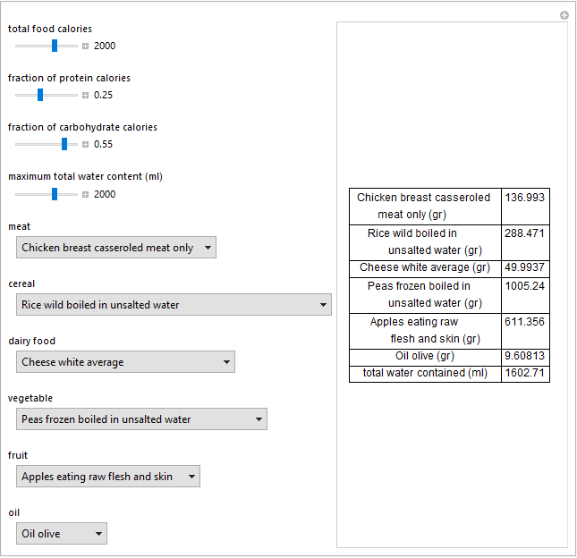

<!DOCTYPE html PUBLIC "-//W3C//DTD XHTML 1.0 Transitional//EN"
   "http://www.w3.org/TR/xhtml1/DTD/xhtml1-transitional.dtd">
<html lang="en" xml:lang="en" xmlns="http://www.w3.org/1999/xhtml">
   <head>
      <link rel=”canonical” href=”https://www.hcsl.com/Publications/Clinical.html” />
      <meta name="generator" content=
         "HTML Tidy for Linux (vers 25 March 2009), see www.w3.org" />
      <title>HCSL Publications: Clinical Tools</title>
      <link href="../Images/favicon.ico" rel="shortcut icon" title="HCSL shortcut" />
	  <meta http-equiv="Content-Type" content="text/html; charset=us-ascii" />
	  <meta name="viewport" content="width=device-width,initial-scale=1,maximum-scale=1,user-scalable=no">
      <meta http-equiv="X-UA-Compatible" content="IE=edge,chrome=1">
      <meta name="HandheldFriendly" content="true">
      <meta name="keywords" content=
         "Enteral nutrition, nutrition therapy, nutritional design" />
      <meta name="description" content=
         "The list of the Hellenic Complex Systems Laboratory clinical tools." />
      <meta name="author" content="ath@hcsl.com" />
	  <style type="text/css">
      <link href="../css/hcsl.css" rel="stylesheet" type="text/css" />
	  <link rel="preconnect" href="https://fonts.gstatic.com">
	  <link href="https://fonts.googleapis.com/css2?family=Source+Sans+Pro&display=swap" rel="stylesheet">
	</head>
   <body>
      <div style="overflow-x:auto;"><table summary="HCSL website" width="97%" border="0" cellpadding="0" cellspacing="5">
         <tr>
            <td align="center" valign="top" bgcolor="#F7F7F7">
               <div style="overflow-x:auto;"><table summary="HCSL website contents" width="195" border="0" cellpadding="5"
                  cellspacing="5">				  
                  <tr>
                     <td>
                        <div align="center">
							<a href="../index.html" class="hidden">
								
							</a>
                        </div>
                     </td>
                  </tr>
                  <tr>
                     <td align="center" valign="middle">
						<a href="../index.html" class="hidden">
							<span class="c6">Hellenic Complex&nbsp;Systems Laboratory</span>
						</a>
                       <p></p>
                     </td>
                  </tr>
				  <tr>
                     <td align="center" valign="middle">
						<a href="../index.html" class="hidden"
						style="margin-top: 2px; margin-bottom: 2px">
						Home</a>
                     </td>
                  </tr> 
                  <tr>
					<td align="center" valign="middle">
                        <a href="../Publications/index.html" class=
							"hidden" style="margin-top: 2px; margin-bottom: 2px">HCSL Publications</a>
					</td>
				  </tr>
                  <tr>
                     <td align="center" valign="middle">
						<a href="../Publications/GAsQC.html" class="hidden" style=
							"margin-top: 2px; margin-bottom: 2px">GAs Based QC</a>
					 </td>
					</tr>
					<tr>
                     <td align="center" valign="middle">
						<a href="../Publications/QC.html" class="hidden" style=
							"margin-top: 2px; margin-bottom: 2px">QC Design</a>
					 </td>
					</tr>
					<tr>
					 <td align="center" valign="middle">
						<a href="../Publications/Risk.html" class="hidden" style=
							"margin-top: 2px; margin-bottom: 2px">QC, Reliability, and Risk</a>
					 </td>
					</tr>
					<tr>
					 <td align="center" valign="middle">
						<a href="../Publications/Diagnostic.html" class="hidden" style=
							"margin-top: 2px; margin-bottom: 2px">Diagnostic Accuracy</a>
					 </td>
					</tr>
					<tr>
					 <td align="center" valign="middle">
						<a href="../Publications/Networks.html" class="hidden" style=
							"margin-top: 2px; margin-bottom: 2px">Networks</a>
					 </td>
					</tr>
					<tr>
					 <td align="center" valign="middle">
						<a href="../Publications/Statistical.html" class="hidden" style=
							"margin-top: 2px; margin-bottom: 2px">Statistical Tools</a>
					 </td>
					</tr>
					<tr>
					 <td align="center" valign="middle">
						<a href="../Publications/Statistics.html" class="hidden" style=
							"margin-top: 2px; margin-bottom: 2px">Statistics of Complexity</a>
					 </td>
					</tr>
					<tr>
					 <td align="center" valign="middle">
						<a href="../Publications/Entropy.html" class="hidden" style=
							"margin-top: 2px; margin-bottom: 2px">Entropy and GAs</a>
                     </td>
				   </tr>				  
                </table></div>
            </td>
            <td width="100%" valign="top">
                  <h2>HCSL&nbsp;Publications</h2>
                  <h1>Clinical Tools</h1>
				  <cite>
                  <h3 name="CT1" id="CT1">1. Chatzimichail T. Enteral Nutritional Design.
                     Wolfram Demonstrations Project, 2017.
                  </h3>
				  </cite>
                  <h4>Abstract </h4>
                  <p class="c1">
					Enteral feeding refers to the delivery of nutrition directly into the gastrointestinal tract, thereby providing part or all of a patient's caloric and nutritional requirements. To design an enteral nutrition formula, the respective quantities of up to six selected foods (a meat, a cereal, a vegetable, a fruit and an oil) are calculated. It is desired that their combination comply with user-defined specifications: total required calories (10-3000), fraction of protein calories (0.15-0.40), fraction of carbohydrate calories (0.15-0.40) and maximum total water
                  content of the foods (1-3000 ml). The specifications are set using the sliders. The foods are selected using their respective menus. Each menu includes a "None" option.
                  </p>
				  <h4>Comment</h4>
				  <p class="c1">
					This free application, that can be used in a <a href="../Glossary/index.html#Clinical">clinical</a> setting, shows a method for the design of enteral nutrition. It includes the respective data of all the foods of the 2015 version of the Composition of Foods Integrated Dataset (<a href="https://www.gov.uk/government/publications/composition-of-foods-integrated-dataset-cofid" title=
                    "Composition of foods integrated dataset">CoFID</a>), published by Public Health England (<a href="https://www.gov.uk/government/organisations/public-health-england" title=
                    "Public Health England">PHE</a>). 
				  </p>
                  <p class="c1">
                     <span class="c2"></span>
                  </p>
                   <p class="c2">
                     Snapshot
                  </p>
                  <p class="c1">
                     <a href=
                        "http://demonstrations.wolfram.com/EnteralNutritionalDesign/" title=
                        "Enteral Nutritional Design Demonstration" target="_blank">Demonstration at the
                     Wolfram Demonstrations Project</a>
                  </p>
                  <p class="c1">
                     <a href="../Tools/Demonstrations/EnteralNutritionalDesign-author.nb"
                        title="Enteral Nutritional Design Code" target="_blank">Source code</a>
                  </p>
				  <p class="c1">
                     <a href="../Documents/EnteralNutritionalDesign.pdf">Technical Report</a> 
					
                  </p>
            </td>
         </tr>
       </table></div>
   </body>
</html>